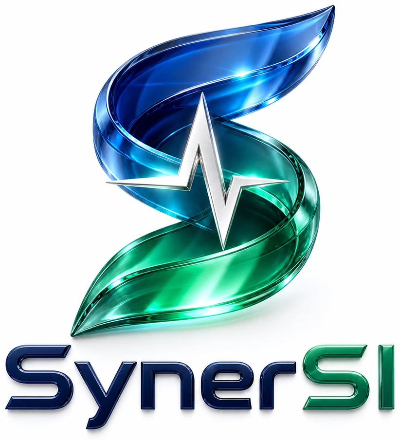

Personal Report
예시 데이터
개인 회복 리포트
SDNN82ms
평균 심박74bpm
회복 하강−14bpm
A 데이터 신뢰도 92/100
PDF · XLSX
치유관광 프로그램 효과검증 · B2B
시너지스는 애플워치 생체신호와 현장 영상, 사전·사후 검사지를 하나로 묶어 프로그램이 남긴 변화를 기관이 제출할 수 있는 리포트로 완성합니다.
Fig. 01 — 개인 회복 리포트. 수치는 화면 예시입니다.
제품 미리보기
관제 · 회복 곡선 · 리포트. 실제 운영 화면에서 세 가지를 옮겨 왔습니다. 탭을 눌러 확인하세요.
회차 4 · 제주 치유의 숲 · 14:20 진행 중
모든 참가자는 가명 ID로 표시됩니다 · 1초마다 갱신
USER-012 · 안정 → 부하 → 회복 3구간 자동 판별
USER-012 · 40대 남 · 스트레스 완화 · 4회차
| 지표 | 사전 | 사후 | 변화 |
|---|---|---|---|
| HRV 자율신경 (SDNN) | 68 ms | 82 ms | +20.6% |
| 말초혈관 노화도 | 54 세 | 49 세 | −5 세 |
| 체성분 (골격근량) | 31.2 kg | 31.7 kg | +0.5 kg |
| 뉴로하모니 (스트레스 지수) | 62 | 48 | −22.6% |
실제 운영 화면 발췌 · 표시된 수치는 화면 예시입니다.
회사 소개
시너지스(SynerSI)는 치유관광과 웰니스 프로그램의 효과를 생체신호로 확인하는 회사입니다. 프로그램이 끝난 뒤의 만족도 조사 대신, 프로그램이 진행되는 동안 몸이 어떻게 반응했는지를 남깁니다.
측정은 익숙한 장비 위에서 이뤄집니다. 참가자는 애플워치를 차고, 운영자는 아이폰과 아이패드로 현장을 기록합니다. 시너지스는 그 신호를 판정하고, 기관이 그대로 제출할 수 있는 문서로 정리합니다.

검증이 필요한 이유
예산을 심의하는 자리에서 통하는 것은 감상이 아니라 근거입니다. 시너지스는 그 근거를 만드는 일부터 시작합니다.
프로그램 직후의 만족도는 정서적 기억에 가깝습니다. 시간이 지나면 흐려지고, 다른 기관과 비교하기도 어렵습니다.
워치 앱의 심박, 종이 검사지, 촬영한 영상이 각자의 형식으로 남습니다. 참가자 한 명의 변화로 이어 붙이는 데 며칠이 걸립니다.
생체정보와 얼굴 영상은 수집 자체가 부담입니다. 언제, 무엇을, 어떻게 지울지가 처음부터 설계되어 있어야 합니다.
“좋았어요” 다섯 점은, 내년 예산을 지켜 주지 못합니다.
설문 만족도가 예산의 근거가 되지 못하는 이유
증거 아키텍처
새로운 장비를 요구하지 않습니다. 이미 쓰고 있는 워치·아이폰·아이패드·맥 위에서 측정과 기록이 한 줄로 이어집니다.
1 Hz · HRV(SDNN) · 3축 가속도
초당 1회 심박과 움직임을 수집합니다. 신호가 끊긴 구간은 워치에 최대 1시간 저장합니다.
워치 5대 · 5명 동시 측정
아이폰 1대에 워치 5대를 묶어 5명씩 동시에 측정하고, 대기열 없이 즉시 배정합니다.
얼굴 모자이크 · 시각 동기화
현장을 촬영 단계에서 모자이크 처리해 기록하고, 그래프와 같은 시각축에 놓습니다.
수집 · 판정 · 리포트
회차 데이터를 모아 3구간을 판정하고, 사전·사후 검사지와 교차 분석해 리포트를 만듭니다.
서버실이 필요 없습니다. 현장의 맥 한 대가 관제·분석·출력을 모두 담당하고, 회차 데이터는 전체 백업과 복원을 지원합니다.
운영 6단계
접수와 배정에서 시작해 리포트 발급과 개인정보 파기까지, 현장에서 벌어지는 일의 순서를 그대로 따릅니다.
참가자가 QR로 문진 10항목과 동의·전자 서명을 마치면, 운영자가 워치를 배정해 가명 ID와 연결합니다. 워치 전용 QR은 대기열 없이 즉시 배정됩니다.
단체·그룹별 월·주·일 캘린더에 프로그램을 배치하고, 식사와 운동 강도를 함께 설계합니다. 프로그램 5분 전 워치 알림, A4·PDF·엑셀 내보내기.
20명을 한 화면에서 관제하고, 안정·부하·회복 3구간을 자동 판별합니다. 워치의 시작·종료를 원격 제어하고, 모자이크 영상과 그래프를 같은 시각축에서 확인합니다.
HRV 자율신경·말초혈관노화·체성분·뇌기능 4종 검사지를 사진과 PDF로 자동 분류합니다. 수치를 확인·수정해 사전·사후로 반영합니다.
교차 분석 5종으로 프로그램별 효과와 집단 간 차이를 확인하고, 개인·기관 리포트를 5개 언어로 발급합니다. 데이터 신뢰도는 100점 등급으로 표시됩니다.
보관 기간을 카운트다운하고, ‘민감 생체정보만 파기’와 ‘전체 완전 파기’ 중 하나를 선택합니다. 익명 통계는 k=5로 남기고 파기 확인서를 발급합니다.
기술 사양
현장에서 바로 돌아가는 구성입니다. 별도 측정 기기나 서버실 없이, 표준 장비와 맥 한 대로 운영됩니다.
REV. 2026.11 · 시너지스 치유관광 프로그램 효과검증 및 관리 포털
도입 조건 문의보안 · 개인정보
치유 현장의 데이터는 민감합니다. 시너지스는 수집 단계에서 지우는 방법까지 미리 정해 두고 운영합니다.
이름 대신 가명 ID(User-001~050)를 쓰고, 실명은 별도 볼트에서 관리자만 확인합니다.
현장 영상은 녹화 시점에 얼굴을 가립니다. 원본 얼굴이 남지 않도록 저장 전에 처리합니다.
민감 생체정보만 파기하거나, 개인정보와 생체정보를 모두 완전 파기합니다. 감사 로그가 함께 남습니다.
소규모 집단은 익명 통계에서 합산해 표시합니다(k=5). 개인을 역추적할 수 없게 만드는 최소 단위입니다.
도입 대상
프로그램 실적과 효과를 함께 보고해야 하는 사업 담당자.
지역 상품의 차별점을 데이터로 설명해야 하는 기획자.
프리미엄 프로그램의 근거를 객실 패키지와 연결하려는 운영자.
회복 프로그램의 결과를 조직 단위로 보고해야 하는 인사 담당자.
현장 데이터를 개인 단위로 수집·검증해야 하는 연구자.
우리 기관에 맞는 구성인지 확신이 서지 않는다면, 회차 규모만 알려 주셔도 됩니다.
도입 상담도입 절차
인원·기간·목적을 듣고 측정 지표와 리포트 구성을 정합니다.
실제 회차 한 번을 함께 운영하며 동선과 화면을 맞춥니다.
운영자 교육과 장비 세팅을 마치고 현장에 인계합니다.
회차별 리포트와 분기 요약을 발급하고 지표를 조정합니다.
자주 묻는 질문
찾는 답이 없으신가요? profusive68@gmail.com 으로 문의해 주세요.
도입 문의
현장 일정과 인원을 알려 주시면 측정 구성과 리포트 범위를 정리해 회신드립니다. 영업일 기준 1일 안에 답변드립니다.